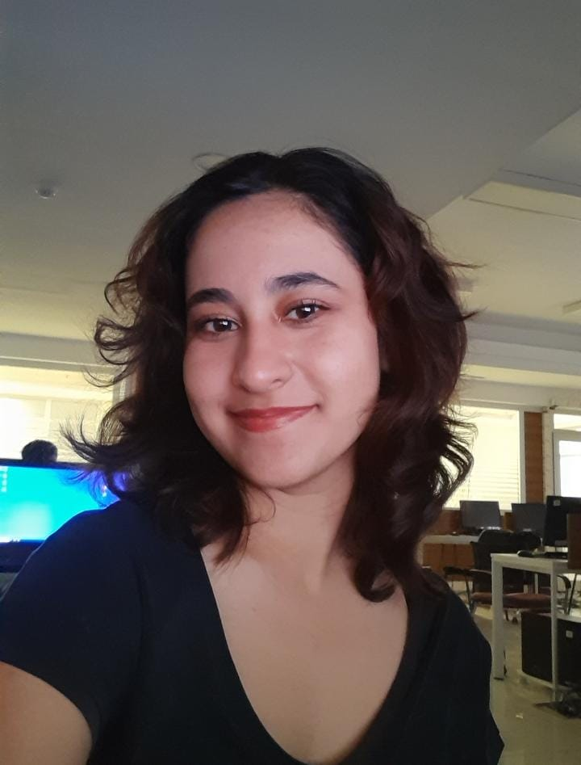

İKRA DAMLA ALMAZ
SOFTWARE ENGINEER

i.damlaalmaz@gmail.com | github.com/idamla | in/damla-almz
+90 *** *** **** | Ankara/Türkiye
SUMMARY
Dedicated 2nd-year Software Engineering student at Yıldırım Beyazıt University with a solid academic background and hands-on experience in web development projects. Proficient in building, testing, and debugging web applications. Actively improving skills in software engineering and teamwork.
PROJECTS
ayda.site-Technical Service Web Platform
- As a Full Stack Developer & Tester, I co-developed a user-friendly web platform for technical service companies with dual-panel support (admin & user).
- Conducted performance and cross-device compatibility tests to ensure responsive and accessible design.
WORK EXPERIENCE
Software Engineer Intern | Egy Yazılım
- Worked on automation systems in collaboration with Schneider Electronics, focusing on Aveva software platforms. Assisted in system setup, monitoring, and basic troubleshooting tasks to support project goals.
EDUCATION
- Ankara Yıldırım Beyazıt University -- B.Sc. in Software Engineering | 2023-2027
- 3.40/4.00 GPA
- Member of AYBU Software Engineering Club (ASEC) , Robotics, Application and Development Club
- Hacı Ömer Tarman Anatolian High School -- Language:German | 2019-2023
CERTIFICATES
- Udemy - The Complete Web Develepment Bootcamp
- Göethe Institut - German A2 Language Certificate
SKILLS AND LANGUAGES
- Python
- Java
- C/C++
- HTML/CSS/Bootstrap
- JavaScript/ReactJS
- Turkish (native)
- English (fluent-C1)
- German (A2)
- Spanish (A2)